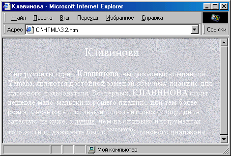
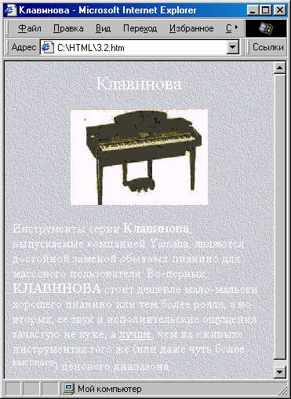

|
|
|
3. Графика на веб-странице
3.1. Основные способы применения графики
В предыдущей главе мы рассмотрели несколько примеров создания веб-страниц. Вы, очевидно, уже обратили внимание, что все они смотрятся довольно “строго”. А все дело в том, что в них не использовались графические элементы. Сейчас, вообще говоря, в Интернете осталось не так много страниц без графических элементов, поскольку с помощью графики можно не только проиллюстрировать предлагаемый материал, но и немного “оживить” общее оформление, о чем речь пойдет в этой главе.
Фоновое изображение
Итак, давайте разберемся, каким же образом можно использовать графические элементы на веб-странице. Рассмотрим такой пример. Допустим, мы хотим, чтобы читатели узнали достоинства нашего любимого электронного пианино — клавиновы. Мы уже написали соответствующий текст, но хотим его оформить не очень строго. И здесь самым простым решением будет разместить этот текст не на одноцветном, а на тематическом фоне.
Допустим, что у нас заготовлен соответствующий фоно вый рисунок (о том, как это сделать, см. в разделе 3.5) — он записан в файле под именем back1 .jpg (рис. 3.1). Если при отдельном просмотре этого рисунка он вам нравится, это еще ничего не значит. Чтобы определить, подходит ли рисунок в качестве фона к тексту, его нужно проверить “в деле”.
Чтобы поместить рисунок на веб-страницу в качестве фона, нужно установить в теге <BODY> атрибут BACKGROUND= со значением, содержащим имя файла рисунка.
<BODY BACKGROUND""Images/back1.jpg">
Если рисунок меньше окна броузера, то он будет повторяться по горизонтали и по вертикали. Это происходит автоматически, и до недавнего времени это нельзя было отменить. Теперь же, если вы не хотите повторения
Рис. 3.1. Фоновый рисунок
Можно указать либо относительное местоположение файла рисунка (то есть путь доступа к нему относительно расположение исходного HTML-файла), либо его полный URL-адрес. Здесь и далее мы предполагаем, что вы разместили в той же папке, что и HTML-файл, папку \lmages, в которую складываете все графические файлы.
Вернемся к нашему рисунку. Ясно, что на таком сероватом фоне черные буквы будут читаться плохо, поэтому сразу определим для текста белый цвет (или почти белый). Гиперссылок у нас пока нет, но о них все равно надо позаботиться заранее. Пока давайте определим для них желтый цвет. Посмотрим, что у нас получается:
<HTML>
<HEAD>
<TITLE>Клавинова</TITLE>
</HEAD>
<BODY BACKGROUND="3.1.jpg" TEXT="#F8F8F8" LINK="Yellow" VLINK="Yellow" ALINK="Yellow">
<H1><DIV ALIGN="center">Клавинова</DIV></H1>
<P ALIGN="justify">
Инструменты серии
<BIG>Клавинова</BIG>
, выпускаемые компанией Yamaha, являются достойной заменой
<I>обычных</I>
пианино для массового пользователя. Во-первых,
<BIG>KJIABHHOBA</BIG>
стоит
<В>дешевле</В>
маломальски хорошего пианино или тем более рояля, а во-вторых, ее звук и исполнительские ощущения зачастую не хуже, а
<U>лучше</U>
, чем на «живых» инструментах того же (или даже чуть более
<SUP>высокого</SUP>)
ценового диапазона.
</Р> </BODY> </HTML>
Результат показан на рис. 3.2. Кстати, обратите внимание, что здесь мы немного “поработали” с элементами текста, чтобы чуть-чуть оживить их: название “клавинова” выделено крупным шрифтом, достоинства — где подчеркнуты, где выделены полужирным шрифтом, слово “обычных” для подчеркивания иронии выделено курсивом, а слово “высокого” поднято над основным текстом с помощью тега <SUP>.
Все это хорошо задумано, но вся страничка выглядит не очень привлекательно. Во-первых, фон имеет ярко выраженную “клеточную структуру”. Во-вторых, текст читается не очень хорошо: для его восприятия приходится напрягать зрение, особенно при больших экранных разрешениях.

Рис. 3.2. Не самое удачное применение фонового рисунка
Попробуем решить эти проблемы. Во-первых, немного уменьшим размер фонового рисунка, чтобы оставить в нем только цвета приблизительно одной яркости. Во-вторых, поскольку текст белый, нужно для улучше ния его читаемости повысить контрастность текста с фоном. В любом графическом редакторе понизим яркость нашего рисунка, что сделает его темнее.
Кроме того, согласно общему правилу, светлый текст на темном фоне лучше всегда делать немного крупнее. Поэтому заключим наш текст в теги <BIG>...</BIG>.
Графические иллюстрации
И, наконец, проиллюстрируем наш текст, вставив перед описанием фотографию клавиновы. Предположим, что фотография у нас уже готова и лежит в палке \lmages под именем clavi.gif. Вставить ее в текст можно с помо щью тега <IMG> , например, вот так:
<IMG SRC="Images/clavi.gif">
В принципе, этого уже достаточно — на месте этой записи броузер отобразит нашу картинку. Однако лучше указать в теге <IMG> еще несколько атрибутов.
Во-первых, надо помнить, что картинки загружаются из сети всегда намного медленнее, чем обычный текст. Это я говорю не к тому, что сам файл картинки должен быть не очень большого объема (это верно, но этот вопрос мы обсудим отдельно), а к тому, что при такой записи, как выше, многие броузеры, начав загружать картинку, приостановят загрузку последующего текста до тех пор, пока картинка не будет загружена полностью. Но для читателя было бы удобнее, если бы текст продолжал загружаться араллельно с картинкой: пока она догружается, можно было бы что-то уже читать. Чтобы броузер мог это сделать, ему нужно явно указать размеры будущей картинки с помощью атрибутов WIDTH= и HEIGHT=:
<IMG SRC="Images/clavi.gif" WIDTH="300" HEIGHT="200">
Вообще говоря, с помощью этих атрибутов можно задать какие угодно размеры картинки, “растянув” или сжав ее как душе угодно. Однако обычно этого не делают, и вот почему. Представлять картинку меньшей, чем она есть, нецелесообразно, поскольку зачем тогда грузить большой файл? Ведь файлы для картинок большого размера имеют большой размер и грузятся из Интернета, соответственно, намного дольше. Лучше уж сделать малень кий файл для картинки маленького размера и быстро загрузить его. А если представить картинку большей, чем она есть, то, как правило, она будет выглядеть малопривлекательно за счет появления “ступенчатости” как в формах, так и в цвете.
Далее, хорошим тоном является наличие так называемого альтернативного текста для тех случаев, когда в броузере отключен просмотр графики. Тогда на месте нашей картинки будет выведен прямоугольник соответ ствующего размера, который сопровождается пояснением, что за картинка на этом месте должна быть. Альтернативный текст вводится как значение атрибута ALT:
<IMG SRC="Images/clavi.gif" WIDTH="300" HEIGHT="200" АLТ="Клавинова">
Наконец, вокруг рисунка можно отобразить рамку. Толщина этой рамки задается как значение атрибута BORDER=. Если мы, как в данном случае, не хотим отображать рамку вокруг рисунка, то можем ничего и не указывать, так как большинство броузеров по умолчанию рамку не рисуют. Но некоторые броузеры все же это делают, и “для верности” неплохо бы указать и отсутствие рамки тоже:
<IMG SRC="Images/clavi.gif" WIDTH="300" HEIGHT="200" АLТ="Клавинова" BORDER="0">
Чего еще не хватает нашему HTML-файлу? Конечно же, гиперссылок! Без них любой документ в Интернете воспринимается гораздо скучнее, поскольку посетитель сразу видит, что зашел в тупик. Поэтому обязательно добавляйте гиперссылки везде, где это только можно. В данном случае, например, слово “Yamaha” просто просится стать гиперссылкой на сайт соответствующей компании. Сделаем это:
<A HREF="http://www.yamaha.com">Yamaha</A>
Кстати, картинки тоже могут содержать гиперссылки. Мы можем, напри мер, точно так же, как со словом “Yamaha”, поступить и с нашим тегом картинки. Тогда щелчок на изображении клавиновы также уведет пользователя на сайт компании Yamaha.
Давайте посмотрим, что у нас получается.
<!DOCTYPE HTML PUBLIC "-//W3C//DTD HTML 4.0 Transitional//EN">
<HTML>
<HEAD>
<TITLE>KJIABHHOBA</TITLE>
</HEAD>
<BODY BACKGROUND="Images/back4.jpg" TEXT="#F8F8F8" LINK="Yellow" VLlNK="Yellow" ALINK="Yellow" BGCOLOR="#OBOBOB">
<H1><DIV ALIGN="center">KJIABHHOBA</DIV></Hl>
<DIV ALIGN="center">
<A HREF="http://www.yamaha.com">
<IMG SRC="Images/clavi.gif" WIDTH="300" HEIGHT="200" ALT="KJIABHHOBA" BORDER="0"></A></DIV>
<BIG>
<P ALIGN="justify">Инструменты серии
<BIG>KJIABMHOBA</BIG>
, выпускаемые компанией
<А HREF="http: //www.yamaha.com">Yamaha </A>
, являются достойной заменой
<I>обычных</I>
пианино для массового пользователя. Во-первых,
<ВIG>КЛАВИНОВА</ВIG>
стоит
<В>дешевле</В>
мало-мальски хорошего пианино или тем более рояля, а во-вторых, ее звук и исполнительские ощущения зачастую не хуже, а <U>лучше</U>, чем на &lаquо;живых» инструментах того же (или даже чуть более
<SUP>Bыcoкoro</SUP>
) ценового диапазона.
</Р>
</BIG>
</BODY>
</HTML>
Результат наших трудов представлен на рис. 3.3. Обратите внимание на то, что для расположения картинки по центру мы поступили так же, как и при центрировании обычного текста — использовали конструкцию <DIV ALIGN="center">.
Текст теперь действительно воспринимается гораздо лучше. Правда, из-за использования слов разного размера и тега <SUP> наши строчки получились разной высоты, что не очень красиво. Однако пока не будем этим заниматься — гибко управлять высотой строк можно с помощью каскадных таблиц стилей, о чем пойдет речь в следующей главе.
Еще следует заметить, что мы не зря определили в нашем примере цвет фона (с помощью атрибута BGCOLOR=). Ведь если у пользователя в броузере отключена загрузка графики, то наш белый текст будет у него отображаться на заданном по умолчанию белом фоне, и в результате ничего не будет

Рис. 3.3. Пример странички с фоновым рисунком и иллюстрацией
видно! Да и вообще, фоновый рисунок может загрузиться и прорисоваться нe сразу, ведь это графический файл, имеющий гораздо большие размеры, чем текст! Поэтому всегда нелишне явно указать нужный цвет фона, желательно близкий по оттенку к фоновому рисунку.
Кстати, тег <IMG> может иметь собственный атрибут ALIGN=, который управляет расположением рисунка относительно текста. В нашем примере это было не актуально, поскольку рисунок находился в отдельном блоке <DIV> . Но если рисунок “встроен” в текст, то есть несколько вариантов его расположения:
ALIGN="left" — текст обтекает рисунок, который располагается слева;
ALIGN="right" — текст обтекает рисунок, который располагается справа;
ALIGN="top" — рисунок располагается внутри текстовой строки, и его верхняя граница совпадает с верхней границей букв текста (можно также применять значение "texttop");
ALIGN="middle" — рисунок располагается внутри текстовой строки, которая вертикально выравнивается по центру рисунка (можно также при менять значение "absmiddle");
ALIGN="bottom" — рисунок располагается внутри текстовой строки, и его нижняя граница совпадает с нижней границей букв текста (можно также применять значение "absbottom" или "baseline").
Кроме того, чтобы рисунок не слишком “прижимался” к тексту, можно оставить между ними немного “воздуха”. Для этого в теге <IMG> используют атрибуты HSPACE= и VSРАСЕ=, значения которых задают соответственно горизонтальное и вертикальное “поля” рисунка.
И еще небольшое замечание: броузер Internet Explorer (версия 4 и выше) позволяет с помощью тега <IMG> загружать и просматривать также видеофрагменты в формате AVI (Video for Windows). Для этого можно установить атрибут DYNSRC=, в качестве значения которого указать имя AVT-файла. При этом можно дополнительно указать в атрибуте START=, когда следует начинать проигрывание видео: "FILEOPEN" — сразу после загрузки файла или "MOUSEOVER" — после наведения указателя мыши на изображение. Атрибут LOOP= позволяет установить количество проигрываний: "О" означает бесконечное повторение, алюбое другое число указывает точное количество повторов.
|
|
|